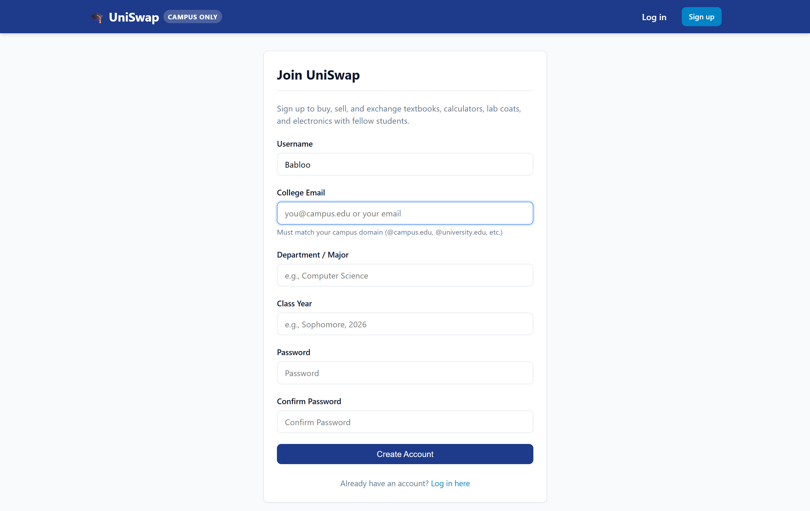
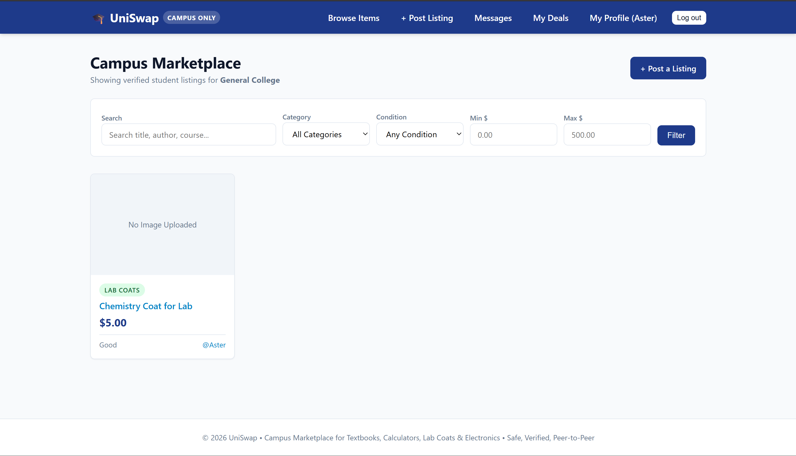
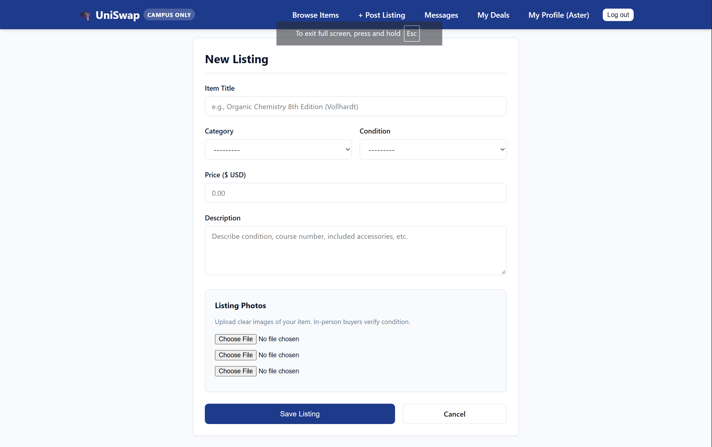
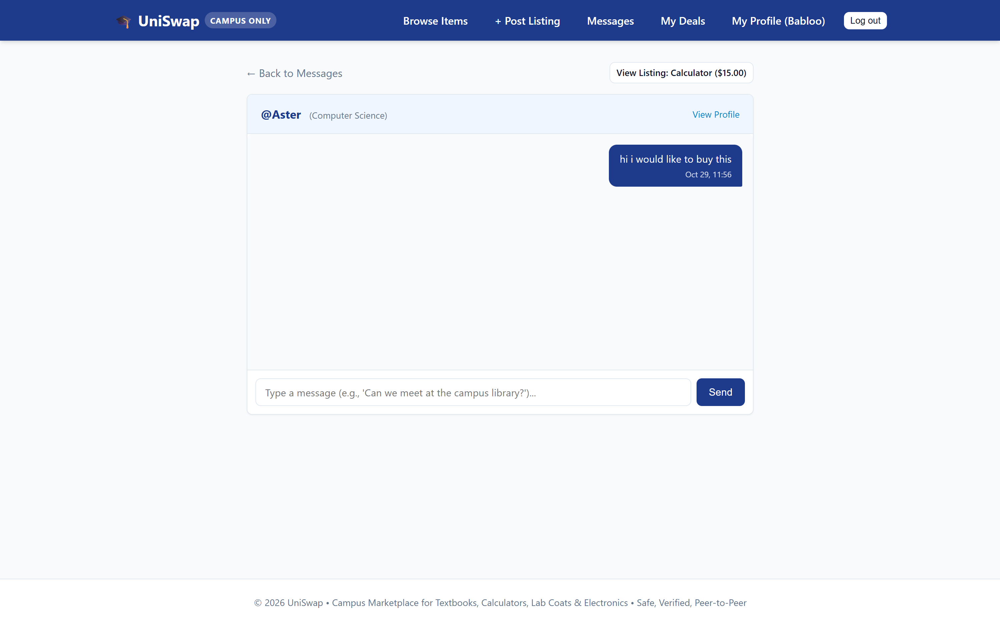
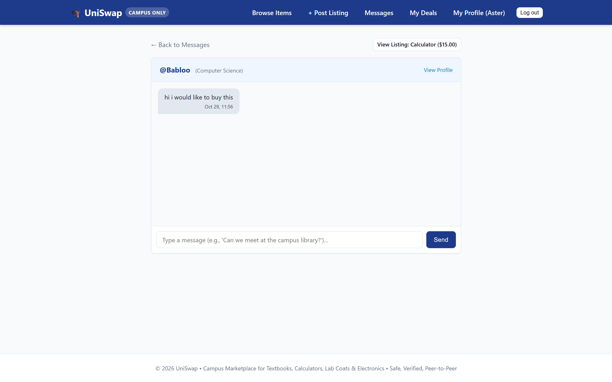
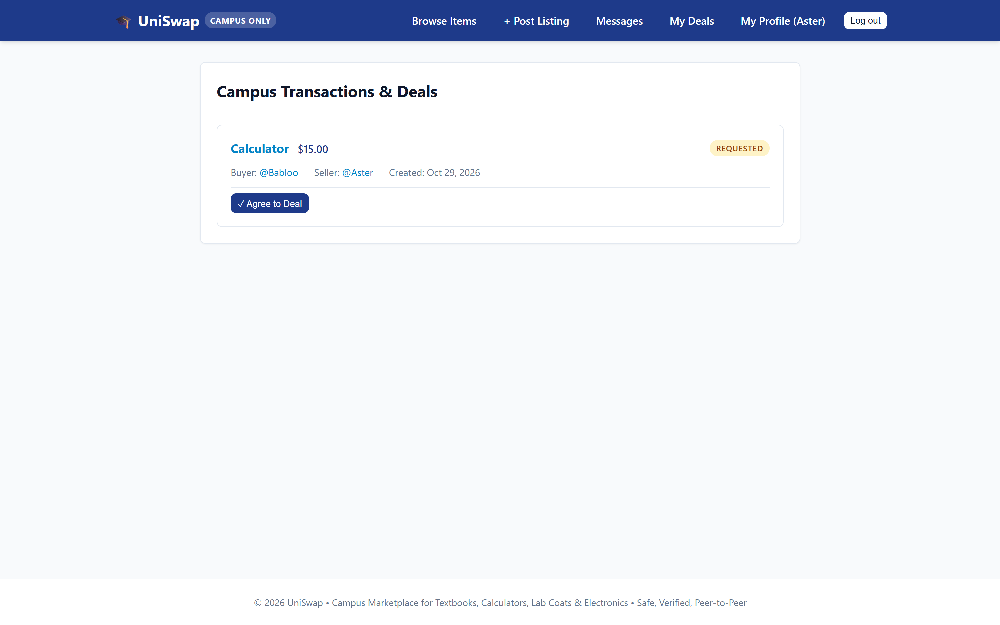
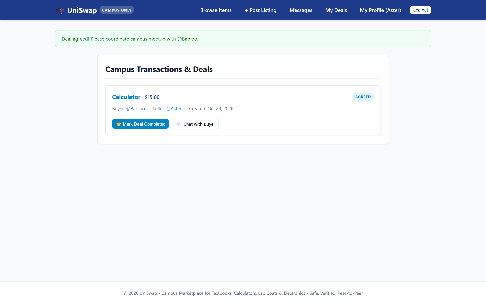
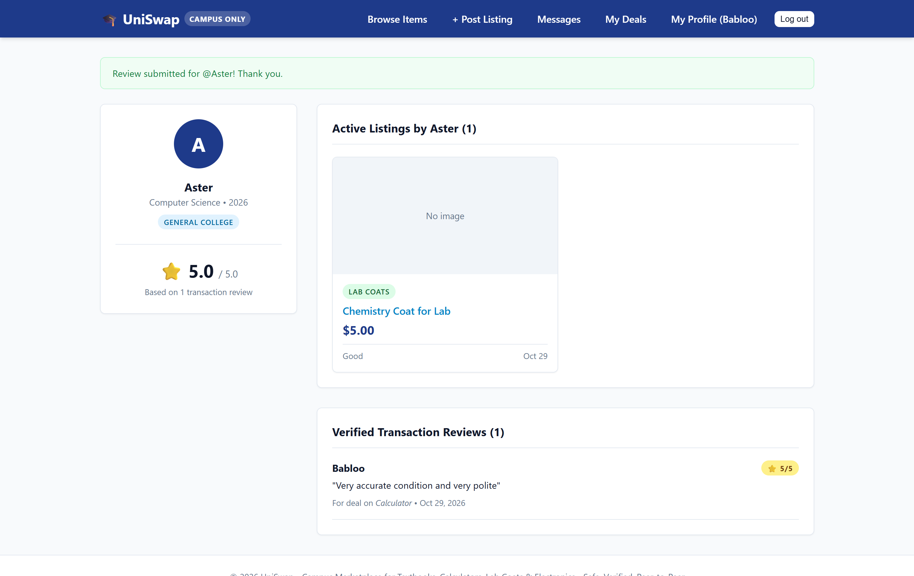
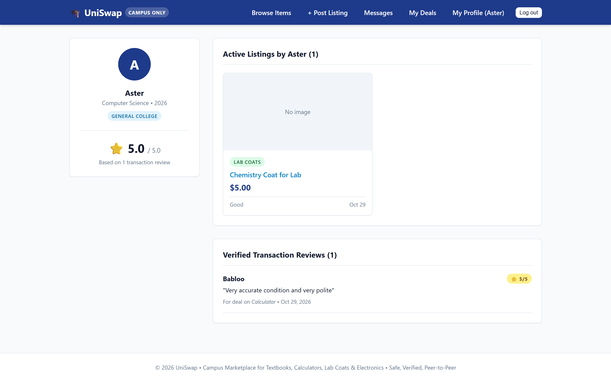

UniSwap: Campus-Only Peer-to-Peer Marketplace System
Author: UniSwap Development Team • Framework: Django 5.x • Language: Python 3.12+ • Deployment Target: WSGI / PostgreSQL
1. Executive Summary
College students routinely spend hundreds of dollars each semester on single-use items such as STEM textbooks, graphing calculators, organic chemistry lab coats, and specialty electronic peripherals. Existing generic classifieds (such as Craigslist or Facebook Marketplace) fail to provide campus-level trust, require sharing personal phone numbers with unknown external entities, and frequently expose students to scams or off-campus meetups.
UniSwap addresses this need by providing an institutional-walled marketplace. By validating every student against their verified institutional domain, transactions occur in safe, physical campus environments between recognized academic peers. The system is engineered on Django 5.x using clean architectural principles: cryptographic verification tokens, transactional state machines, strict ownership verification, live SQL aggregation for seller trust, and total elimination of Insecure Direct Object Reference (IDOR) vulnerabilities.
2. Visual UI Verification & Feature Walkthrough
The following screenshots demonstrate the verified end-to-end functionality of UniSwap running in production:
2.1 Student Registration & Domain Detection
Students register using their academic email. The system dynamically resolves and creates the associated campus record.

2.2 Campus Marketplace Catalog & Multi-Criteria Search
The marketplace feed displays active items scoped to the user's institution with search across categories, condition, and price bounds.

2.3 Listing Creation with Image Uploads
Sellers publish items with categorized condition metrics and multi-photo uploads handled via inlineformset_factory.

2.4 Scoped Peer-to-Peer Messaging
Direct communication happens securely within the platform, eliminating the need to exchange private personal contact info.


2.5 Transaction State Machine: Requested to Agreed
Deals transition through explicit states. Once the seller agrees, the item is marked as Reserved.


2.6 Completed Deal, Reviews & Dynamic Seller Rating
Upon physical exchange, the transaction is marked completed and the buyer leaves a verified 5-star review. The seller's aggregate score calculates live via SQL Avg.


3. Security Architecture & IDOR Prevention
Insecure Direct Object Reference (IDOR) is eliminated across UniSwap by pre-filtering querysets to the authenticated user before executing get_object_or_404:
# IDOR-immune query pattern applied across UniSwap
user_conversations = Conversation.objects.filter(
Q(buyer=request.user) | Q(seller=request.user)
)
conversation = get_object_or_404(user_conversations, pk=conv_id)
Non-participants attempting to access /messages/99/ or /deals/42/agree/ receive an HTTP 404 Not Found error.
4. Automated Test Suite
The application is validated by 33 unit and integration tests:
- Verification gate blocking unauthorized access across views.
- Ownership guard preventing non-owners from editing or deleting listings (HTTP 403).
- Zero-IDOR response verification (HTTP 404) for non-participants.
- Finite state machine lifecycle transitions (
Requested → Agreed → Completed). - Verified review gates, prevention of self-reviews, and live
Avgscore calculation. - Domain validation and dynamic campus generation.
5. Conclusion
UniSwap demonstrates a robust, student-focused marketplace built with strict data integrity, zero-IDOR safety, and clean software architecture.